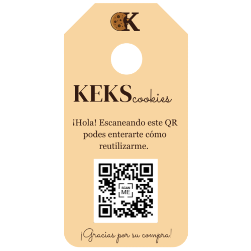

KEKS
Un frasco a la vez
Nuestro Proyecto
KEKS Cookies es un microemprendimiento dedicado a la concientización referida a la obligacion que tenemos como de sociedad luchar contra la contaminación y el cambio climático. Nuestra mision principal es ayudar con la conservación de nuestro planeta a partir de la reducción de desechos, en este caso, de vidrio. Ademas, ya que somos egresados, las ganancias obtenidas seran destinadas al financiamiento de nuestra fiesta de gala.
Quiénes Somos
Entre los miembros de nuestro proyecto nos encontramos nosotros 5, todos alumnos de 6to Economía del Instituto ALFA San Gabriel. Con el fin de lograr de optimizar los procesos y maximizar la eficiencia, hemos repartido los roles y tareas a cumplir equitativamente teniendo como base nuestras competencias, es decir, las habilidades que cada uno de nosotros puede aportar.
Sofía Makkos
Administración

Santino Bianchi
Programación

Catalina Vecchio
Diseño Gráfico

Daira Andreievich
Relaciones Públicas
Camila Gallesio
Producción
Nuestros Productos
Los frascos de vidrio están disponibles para la venta en dos tamaños:
Grande (Contiene 10 galletas) ARS $1500
Mediano (Sin galletas) ARS $1000

Chico (Sin galletas) ARS $500
A su vez, contamos con tres sabores de cookies:
Vainilla
Vainilla con Rocklets
Vainilla con Chips
Chocolate
Como Reutilizarnos
Para aportar nuestro granito de arena a la problemática mundial, te recomendamos cómo reutilizar el frasco que adquiriste:
- Contenedor para alimentos secos, como fideos, arroz y variedad de condimentos
- Contenedor para conservas o mermeladas caseras
- Maceta para las plantas adecuadas, como suculentas.
- Lapicero o contenedor para otros articulos de libreria
- Material reciclable optimo para ser llevado a un punto verde
Tambien ofrecemos, por un valor menor, la opcion de refill de galletitas (Solo valido para el 08/11/2023).
 kekscookies_
kekscookies_